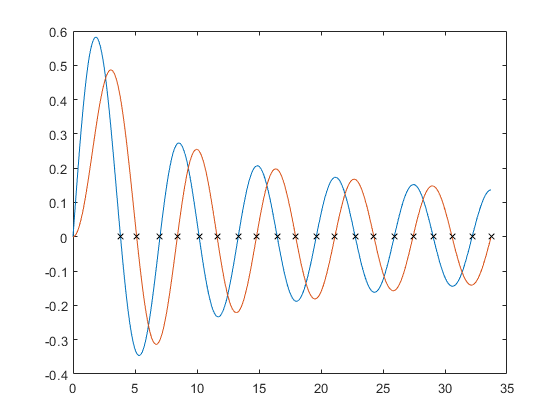

besselzero
besselzero calculates the zeros of Bessel function of the first and second kind
x = besselzero(n) x = besselzero(n, k) x = besselzero(n, k, kind)
Contents
Inputs
- n - The order of the bessel function. n can be a scalar, vector, or matrix. n can be positive, negative, fractional, or any combinaiton. abs(n) must be less than or equal to 146222.16674537213 and 370030.762407380 for first and second kind respectively.
- k - The number of postive zeros to calculate. When k is not supplied, k = 5 is the default. k must be a scalar.
- kind - kind is either 1 or 2. When kind is not supplied, default is kind = 1.
Outputs
- x - The calculated zeros. size(x) = [size(n) k].
Description
besselzero calculates the first k positive zeros of nth order bessel function of the first or second kind. Note, that x=0 is not included as the first zero.
Algorithm
the first three roots of any order bessel can be approximated by a simple equations. These equations were generated using a least squares fit of the roots from orders of n=0:10000. The approximation is used to start the iteration of Halley's method. The 4th and higher roots can be approximated by understanding the roots are regularly spaced for a given order. Once the 2nd and 3rd roots are found, the spacing can be approximated by the distance between the 2nd and 3rd root. Then again Halley's method can be applied to precisely locate the root.
Because the algorithm depends on good guesses of the first three zeros, if the guess is to far away then Halley's method will converge to the wrong zero which will subsequently cause any other zero to be incorrectly located. Therefore, a limit is put on abs(n) of 146222.16674537213 and 370030.762407380 for first and second kind respectively. If n is specified above these limits, then an error is thrown.
Example
n = (1:2)';
k = 10;
kind = 1;
z = besselzero(n, k, kind);
x = linspace(0, z(end), 1000);
y = nan(2, length(x));
y(1,:) = besselj(n(1), x);
y(2,:) = besselj(n(2), x);
nz = nan(size(z));
nz(1,:) = besselj(n(1), z(1,:));
nz(2,:) = besselj(n(2), z(2,:));
plot(x, y, z, nz,'kx')
 Authorship
Originally written by Written by: Greg von Winckel - 01/25/05 Contact: gregvw(at)chtm(dot)unm(dot)edu
Modified, Improved, and Documented by Jason Nicholson 2014-Nov-06
Change Log
- Original release. 2005-Jan-25, Greg von Winckel.
- Updated Documentation and commented algorithm. Fixed bug in finding the the first zero of the bessel function of the second kind. Improved speed by factor of 20. 2014-Nov-06, Jason Nicholson.